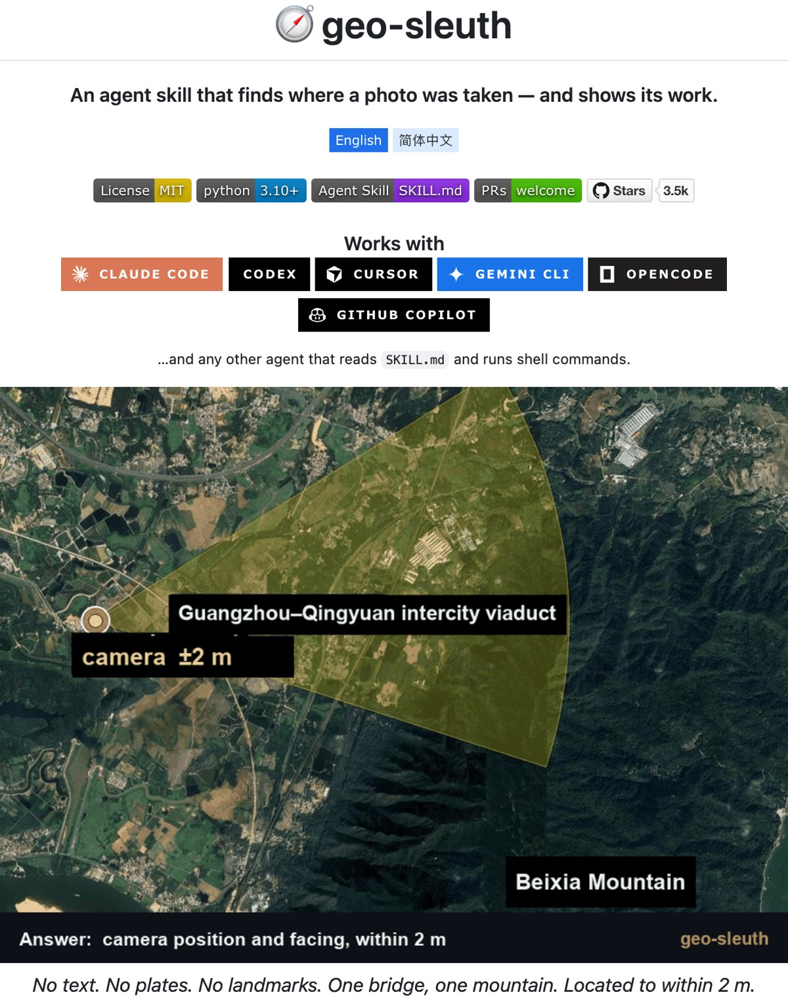
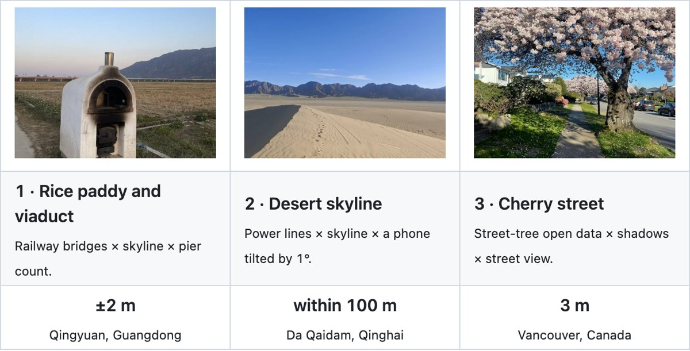
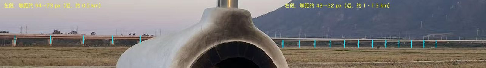
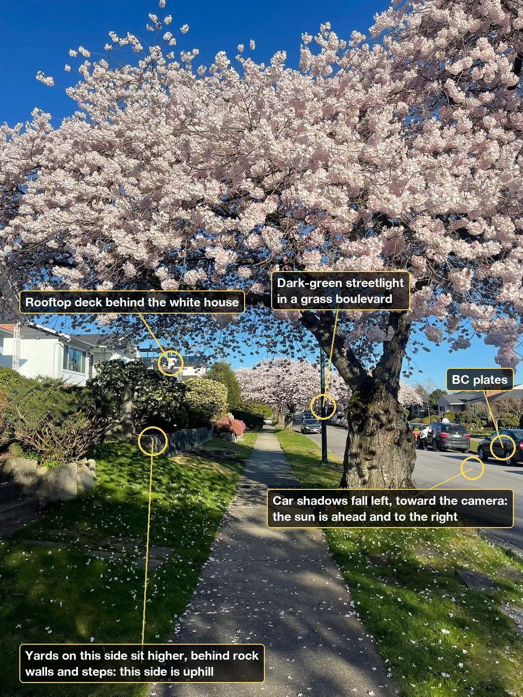
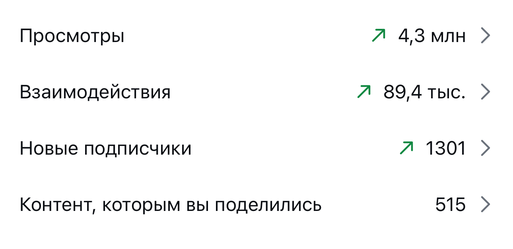

geo-sleuth
Бесплатный скилл для Claude, который по снимку без вывесок и геометок находит, где стоял фотограф. Как он ищет, как поставить одной командой и как проверить свои фото первой
geo-sleuth - это скилл для Claude Code с открытым кодом. Даёшь ему фото и пишешь «найди, где это снято». Он сверяет горы с картой высот, считает опоры мостов, тени машин и деревья из открытых баз и возвращает точку съёмки с радиусом ошибки. В примерах автора промах 2-3 метра, один поиск идёт 30-70 минут
Обычный поиск по картинке ищет похожие фото в интернете. geo-sleuth работает как сыщик: читает в кадре геометрию и сверяет её с открытыми картами. Что он использует:

Ни у одного снимка не было координат внутри файла. Автор скилла расписал каждый поиск по шагам


Автор честно пишет: это записи конкретных прогонов. Другая модель или другие решения агента могут не прийти к тому же результату
Понадобится Claude Code: это Claude, который работает с файлами на твоём компьютере. Сам скилл бесплатный
Куда вставить. В Терминал на Mac (или PowerShell на Windows)
npx skills add Oldcircle/geo-sleuthЧто увидишь. Вопрос, для каких агентов ставить. Отметь Claude Code. Если пишет, что npx не найдена, значит нет Node.js: попроси Claude его поставить
Что это даёт. Папка скилла ляжет туда, где Claude её найдёт. Можно и проще: напиши Claude «поставь скилл geo-sleuth с GitHub Oldcircle», он выполнит команду сам
Что написать. «Запусти doctor.py из скилла geo-sleuth и почини всё, что не прошло»
Что увидишь. Список проверок: Python 3.10 и новее, uv, curl, браузер Chrome
Что это даёт. Недостающее Claude поставит сам. При первом поиске скачается около 2,4 ГБ, держи место на диске
Что написать. Приложи снимок и напиши «найди, где это снято»
Что увидишь. Агент читает кадр, сужает район и через 30-70 минут возвращает точку, направление камеры и картинку-улику
Что это даёт. Ты видишь, какие детали фото выдали место. Это и есть список того, что закрывать
Если geo-sleuth находит улицу по вишне и теням, то вид из окна в сторис выдаёт адрес ещё проще. Вот что агент читает в кадре:

Силуэт гор, мост, трубы, высотки на горизонте. По ним место ищется без единой надписи
Деревья, фонари, заборы, форма бордюров, номера машин. Некоторые города, как Ванкувер, выкладывают это в открытые данные
По теням видно, куда смотрит окно. Вместе со временем публикации это сужает поиск до стороны дома
Один и тот же вид из окна в десяти сторис - это десять подсказок вместо одной
github.com/Oldcircle/geo-sleuth - скилл, установка, кейсы и требования, лицензия MITДанные на 19 октября 2026
Я Катерина Арта, продюсер EdTech. Внедряю нейросети в бизнес, контент и продажи. Сама работаю без команды: вместо штата у меня ИИ-помощники, и каждый знает мои правила и продукты
Мой блог ведут ИИ-агенты: находят темы, которые уже залетели, пишут сценарии, собирают рилсы с цифровым двойником и выдают материалы по кодовым словам. Я проверяю и принимаю решения




Три рилса по миллиону просмотров и больше, без рекламы и без команды
Ту же систему из нейросетей я собираю для экспертов: контент, автоворонки, боты, сайты и продажи. Дизайнер, монтажёр, таргетолог, копирайтер и менеджер по продажам в проекте не нанимались, их работу закрыли нейросети
Поставить geo-sleuth - пара минут. Понять, какие скиллы и агенты нужны именно твоему бизнесу, как связать их с контентом и продажами и что поручить им первым, - это уже работа над твоим бизнесом
На консультации разбираю твои продукты и неделю и собираем план: какую работу забирают ИИ-агенты и с какой задачи начать завтра
Напиши слово
мне в личку Telegram
НаписатьМои каналы и страницы